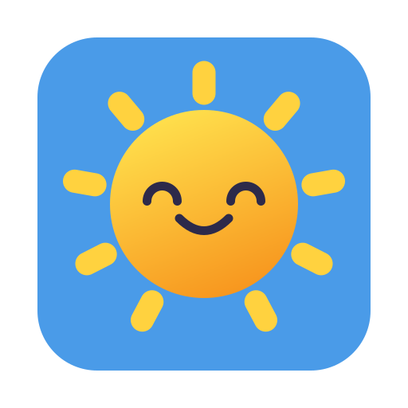
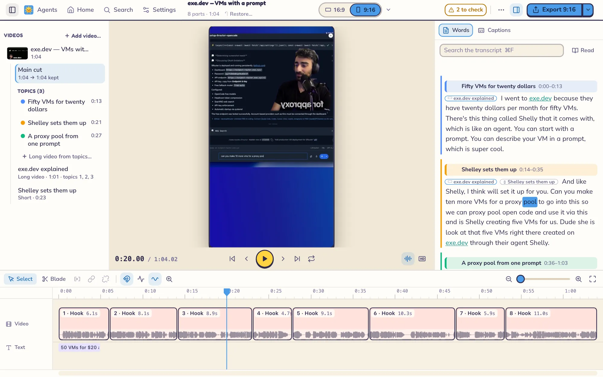
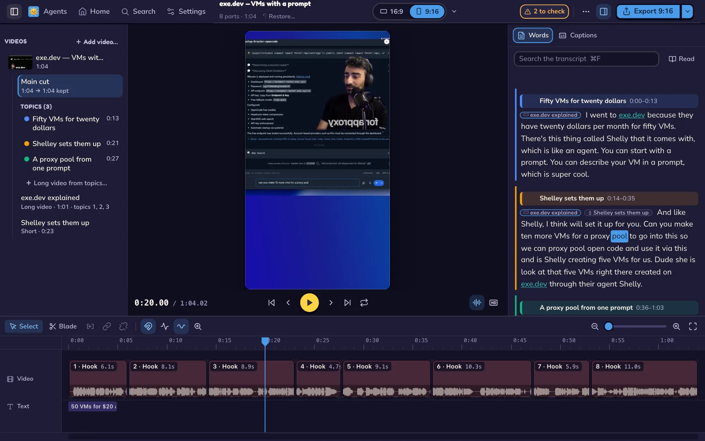
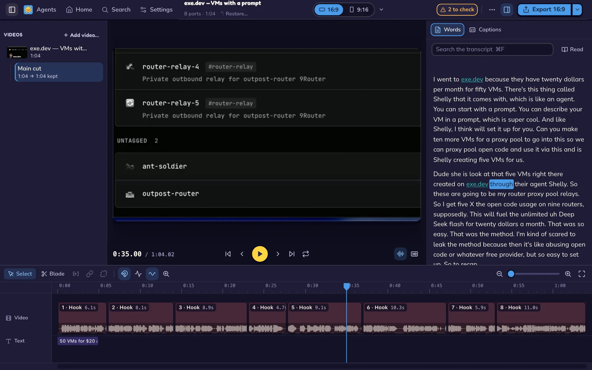
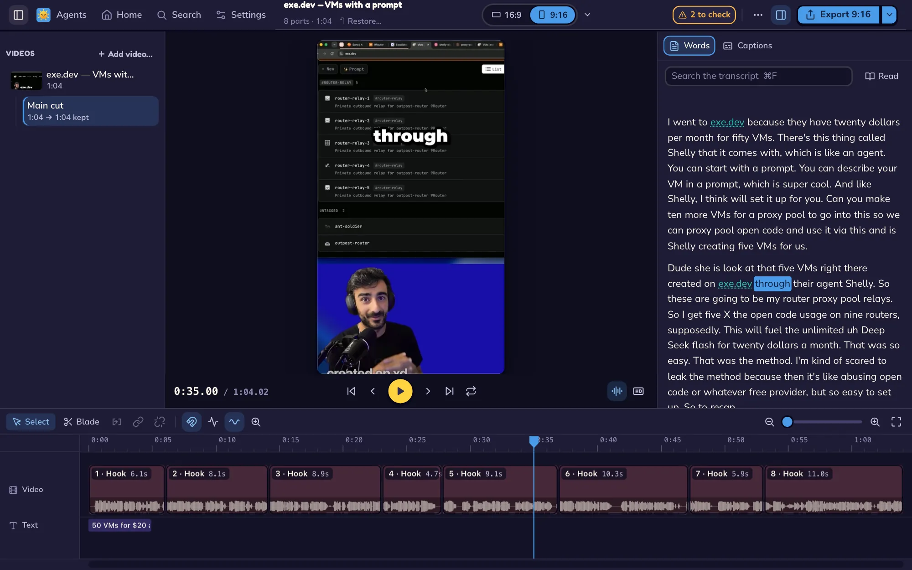
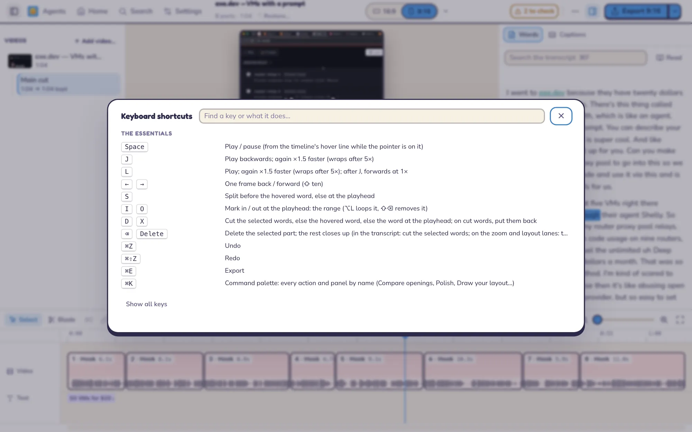
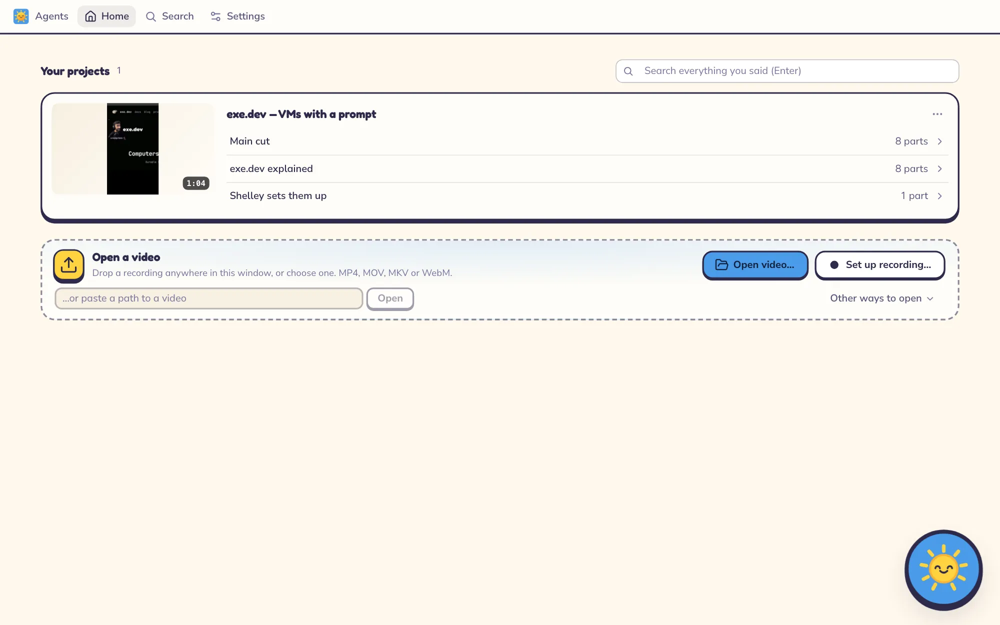
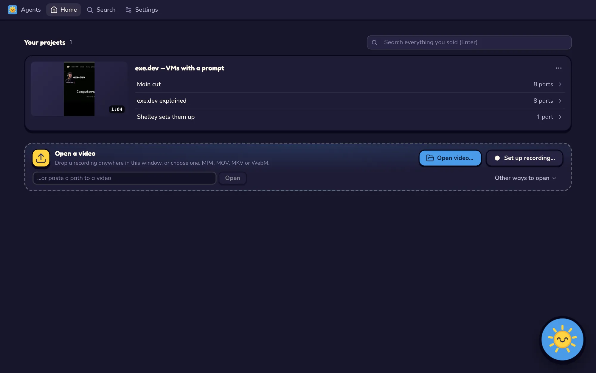

Word-based editing
Cut and restore by editing the transcript.
- Word-snapped trims
- Tighten pauses and fillers
- Find and replace
- Versions and History
gmclip turns long recordings into Shorts and YouTube cuts. Strike words in the transcript to cut, frame for 9:16 and 16:9, burn in captions, and let your own AI agent find the moments worth posting.
The installers aren’t signed yet. On a Mac, open System Settings → Privacy & Security and click Open Anyway the first time; on Windows, click More info, then Run anyway. Release notes and checksums.
Open source under MIT or Apache-2.0. Transcription runs on your machine. No ffmpeg inside. Bring Claude Code, Codex, pi or opencode.



A native editor with a Rust core, built for people who talk on camera and post everywhere.
Drop in an MP4, MOV, MKV or WebM. gmclip transcribes it on your machine, word by word.
Cut by deleting text. Tighten clears pauses and filler words in one go, and one undo brings them back.
Pick 9:16 or 16:9, place crops and the facecam, and burn in captions with your keywords in yellow.
Reels and YouTube presets at the right loudness, plus a review link your phone can open.
Every word links to its frame. Delete a sentence and the video goes with it; restore it and it comes back. Trims snap to word edges, so cuts land between words instead of halfway through one.

Each cut keeps both, 9:16 and 16:9. Switch with one click and the edit follows. Presets for full screen and screen-plus-facecam get you most of the way, and crop boxes do the rest.

Put several videos in one project and arrange them on a single timeline. Trims there only hide footage, so nothing is lost. Captions, volume levels and on-screen text sit on lanes you can see and drag.

J/K/L to shuttle, I/O to mark, and a command palette that finds every action by name. Press ? anytime to see every key.

What's built today, on macOS and Windows.
Cut and restore by editing the transcript.
Your own AI agent finds the moments; nothing runs until you click.
Vertical and horizontal from one edit.
Burned in, styled and timed to each cut's own audio.
Several videos, one arrangement.
Levels that hold up on every platform.
Ready to post, not just rendered.
A built-in MCP server gives an agent every feature.
Scan a QR code and give notes from the couch.
Your look on every cut, set once.
Find anything you've ever said.
Your footage stays on your machine.
A cream theme and a night-ink theme, both following your system by default.


Download gmclip 0.1.0 for macOS or Windows, or build it from source. Leave your email to hear when a new version is out.